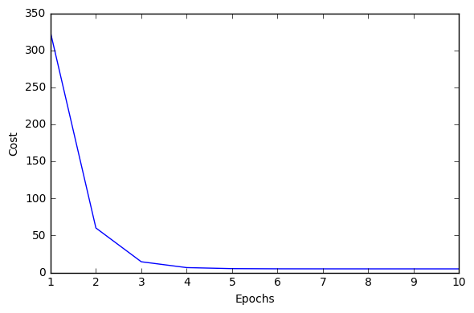
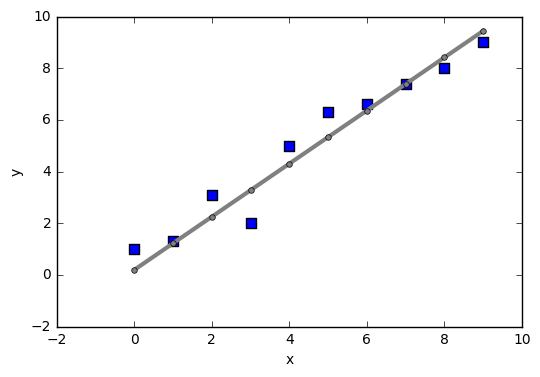
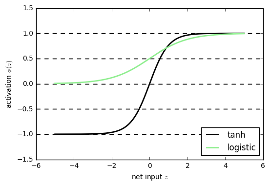

ニューラルネットワーク - 数値計算ライブラリT h e a n o によるトレーニングの並列化¶
13.1 Theano を使った式の構築、コンパイル、実行¶
高負荷な計算を行う際の課題
- Python は GIL があるため、 1 コアしか使えない
multiprocessingを使っても PC の CPU のコア数は高々 16 個程度- 50 ユニット程度の MLP で 28 * 28 の画像分類の学習をするためにすら 1,000 個もの重みを計算する必要がある
解決策
- GPU を使う
- ただし、 GPU で Python コードを実行することは難しい
Theano
- Python を使って機械学習のモデルを効率的にトレーニングすることが目的のライブラリ
- CPU または GPU を使い、多次元配列（テンソル）を用いた数式の実装・コンパイル・評価を高効率で行うことができる
- NumPy や SymPy をベースにしている
13.1.2 はじめての Theano¶
- テンソル (tensor) は、スカラ・ベクトル・行列を一般化したもの
- スカラ: 0 階のテンソル
- ベクトル: 1 階のテンソル
- 行列: 2 階のテンソル
Theano での実装¶
- 記号 (variable object) を定義
- コード（関数）を定義しコンパイル
- 実行
スカラ計算の例¶
\[z = x_1 \times w_1 + w_0\]
In [38]:
import theano
from theano import tensor as T
x1 = T.scalar()
w1 = T.scalar()
w0 = T.scalar()
z1 = w1 * x1 + w0
net_input = theano.function(inputs=[w1, x1, w0], outputs=z1)
'Net input: %.2f' % net_input(2.0, 1.0, 0.5)
Out[38]:
'Net input: 2.50'
13.1.3 Theano を設定する¶
- 64 ビット整数・ 32 ビット整数・浮動小数点を選択する必要がある
- GPU で数式の評価を高速化する場合は、 32 ビットのアーキテクチャを使う
- 開発時は CPU を使い、実行時には GPU を使うようにすると効率が良い
THEANO_FLAGS環境変数で浮動小数点型やハードウェアを設定できる- 開発時には
THEANO_FLAGS=device=cpu,floatX=float64 - 実行時には
THEANO_FLAGS=device=gpu,floatX=float32などとするとよい
- 開発時には
In [39]:
# 浮動小数点型のデフォルト設定を確認する
theano.config.floatX
Out[39]:
'float32'
In [40]:
# 浮動小数点型の設定を変更する
theano.config.floatX = 'float32'
In [41]:
# 利用するハードウェアの確認
theano.config.device
Out[41]:
'cpu'
13.1.4 配列構造を操作する¶
2 * 3 行列の各列の和を求める例
In [42]:
import numpy as np
x = T.fmatrix(name='x')
x_sum = T.sum(x, axis=0)
# コンパイル
calc_sum = theano.function(inputs=[x], outputs=x_sum)
In [43]:
# 実行 (Python リスト)
py_ary = [[1, 2, 3], [1, 2, 3]]
'Column sum: %s' % calc_sum(py_ary)
Out[43]:
'Column sum: [ 2. 4. 6.]'
In [44]:
# 実行 (Numpy 配列)
np_ary = np.array(py_ary, dtype=theano.config.floatX)
'Column sum: %s' % calc_sum(np_ary)
Out[44]:
'Column sum: [ 2. 4. 6.]'
In [45]:
# T.matrix() など variable オブジェクト生成時に ``name`` 引数を指定すると、 print 時に記号名が返される
x
Out[45]:
x
共有変数¶
- 共有変数 (shared variable) を使うと、複数の関数間で変数を使いまわすことができる
- 変数を使いまわすことで CPU/GPU 間での通信を削減できる
- データセットが GPU のメモリに収まる場合に、データセットを GPU に残しておくなど
In [46]:
# 入力
x = T.fmatrix('x')
# 共有変数を定義
w = theano.shared(np.asarray([[0.0, 0.0, 0.0]], dtype=theano.config.floatX))
# 出力
z = x.dot(w.T)
# 共有変数の更新方法
update = [w, w + 1.0]
# コンパイル
net_input = theano.function(inputs=[x], updates=[update], outputs=z)
# 実行
data = np.array([[1, 2, 3]], dtype=theano.config.floatX)
for i in range(5):
print('z%d: %s' % (i, net_input(data)))
z0: [[ 0.]]
z1: [[ 6.]]
z2: [[ 12.]]
z3: [[ 18.]]
z4: [[ 24.]]
In [47]:
""" given を使った例 """
# 初期化
data = np.array([[1, 2, 3]], dtype=theano.config.floatX)
x = T.fmatrix('x')
w = theano.shared(np.asarray([[0.0, 0.0, 0.0]], dtype=theano.config.floatX))
z = x.dot(w.T)
update = [w, w + 1.0]
# コンパイル
net_input = theano.function(inputs=[], updates=[update], givens={x: data}, outputs=z)
# 実行
for i in range(5):
print('z%d: %s' % (i, net_input()))
z0: [[ 0.]]
z1: [[ 6.]]
z2: [[ 12.]]
z3: [[ 18.]]
z4: [[ 24.]]
13.1.5 線形回帰の例¶
最小二乗法による線形回帰を実装する。
In [48]:
# 教師データ
X_train = np.asarray([
[0.0], [1.0],
[2.0], [3.0],
[4.0], [5.0],
[6.0], [7.0],
[8.0], [9.0]
], dtype=theano.config.floatX)
y_train = np.asarray([
1.0, 1.3,
3.1, 2.0,
5.0, 6.3,
6.6, 7.4,
8.0, 9.0
], dtype=theano.config.floatX)
In [49]:
import theano
from theano import tensor as T
import numpy as np
def train_linreg(X_train, y_train, eta, epochs):
costs = []
# 学習率
eta0 = T.fscalar('eta0')
# 従属変数
y = T.fvector(name='y')
# 説明変数
X = T.fmatrix(name='X')
# 重み
w = theano.shared(
np.zeros(
shape=(X_train.shape[1] + 1),
dtype=theano.config.floatX
),
name='w'
)
# コストの計算 (誤差平方和)
net_input = T.dot(X, w[1:]) + w[0]
errors = y - net_input
cost = T.sum(T.pow(errors, 2))
# 重みの更新
gradient = T.grad(cost, wrt=w) # wrt 引数の変数で自動微分する
update = (w, w - eta0 * gradient)
# モデルのコンパイル
train = theano.function(
inputs=[eta0],
outputs=cost,
updates=[update],
givens={X: X_train, y: y_train}
)
for _ in range(epochs):
costs.append(train(eta))
return costs, w
In [50]:
from matplotlib import pyplot
# 学習
costs, w = train_linreg(X_train, y_train, eta=0.001, epochs=10)
pyplot.plot(range(1, len(costs) + 1), costs)
pyplot.xlabel('Epochs')
pyplot.ylabel('Cost')
pyplot.tight_layout()
pyplot.show()

In [51]:
def predict_linreg(X, w):
""" 線形回帰関数 """
Xt = T.matrix(name='X')
net_input = T.dot(Xt, w[1:]) + w[0]
predict = theano.function(
inputs=[Xt],
givens={w: w},
outputs=net_input)
return predict(X)
In [52]:
pyplot.scatter(
X_train,
y_train,
marker='s',
s=50,
)
pyplot.plot(
range(X_train.shape[0]),
predict_linreg(X_train, w),
color='grey',
marker='o',
markersize=4,
linewidth=3
)
pyplot.xlabel('x')
pyplot.ylabel('y')
pyplot.show()

13.2 フィードフォワードニューラルネットワークでの活性化関数の選択¶
- MLP は、微分可能であればどのような関数を活性化関数として使っても良い
- 線形活性化関数を活性化関数としても用いることもできるが、線形関数の和は線形関数になり、非線形な結果を得られないのであまり役に立たない
- ロジスティック関数は入力の負の度合いが多いと出力が 0 に近づき、学習に時間がかかり極小値に陥る可能性が高くなる
- このため、ロジスティック関数の代わりに、双曲線正接 (hyperbolic tangent) 関数を使うことも多い
13.2.1 ロジスティック関数のまとめ¶
In [53]:
X = np.array([[1, 1.4, 1.5]])
w = np.array([0.0, 0.2, 0.4])
In [54]:
def net_input(X, w):
z = X.dot(w)
return z
def logistic(z):
return 1.0 / (1.0 + np.exp(-z))
def logistic_activation(X, w):
z = net_input(X, w)
return logistic(z)
In [55]:
# このサンプル x が陽性クラスに属する確率
'P(y=1|x) = %.3f' % logistic_activation(X, w)[0]
Out[55]:
'P(y=1|x) = 0.707'
In [56]:
# W: array, shape = [n_output_units, n_hidden_units]
# 隠れ層 -> 出力層 (最初の列はバイアスユニット)
W = np.array([
[1.1, 1.2, 1.3, 0.5],
[0.1, 0.2, 0.4, 0.1],
[0.2, 0.5, 2.1, 1.9],
])
# A: array, shape = [n_hidden_units+1, n_samples]
# 隠れ層の活性化 (最初の要素はバイアスユニット)
A = np.array([[1.0], [0.1], [0.3], [0.7]])
# Z: array, shape = [n_output_units, n_samples]
Z = W.dot(A)
y_probas = logistic(Z)
print('Probabilitis:\n%s' % y_probas)
Probabilitis:
[[ 0.87653295]
[ 0.57688526]
[ 0.90114393]]
出力層が複数のロジスティック活性化ユニットからなる場合、サンプルが各クラスに分類される確率の和が 100 % とはならず、各クラスへの所属確率としては使えない。
13.2.2 ソフトマックス関数を使って多クラス分類の確率を推定する¶
ソフトマックス関数 (softmax function)
- ロジスティック関数の一般化
- 多クラス分類問題でクラスへの所属確率を計算できる
- 正規化項として各クラスの所属確率の和を分母にもっている
\[P(y=i|z) = \phi_{softmax}(z) = \frac{e^z_i}{{\sum_m}e^z_m}\]
In [57]:
def softmax(z):
return np.exp(z) / np.sum(np.exp(z))
def softmax_activation(X, w):
z = net_input(X, w)
return softmax(z)
In [59]:
y_probas = softmax(Z)
print('Probabilities:\n', y_probas)
Probabilities:
[[ 0.40386493]
[ 0.07756222]
[ 0.51857284]]
13.2.3 双曲線正接関数を使って出力範囲を拡大する¶
双曲正接(hyperbolic tangent:tanh)関数
MLP でよく使われているシグモイド関数のひとつ
ロジスティック関数の尺度を取りなおした関数
出力範囲がロジスティック関数の \((0, 1)\) に対して \((-1, 1)\) と広い
\[\phi_{tanh}\left(z\right) = 2 \times \phi_{logistic}\left(2 \times z\right) - 1 = \frac{e^z - e^{-z}}{e^z + e^{-z}}\]
In [60]:
def tanh(z):
e_p = np.exp(z)
e_m = np.exp(-z)
return (e_p - e_m) / (e_p + e_m)
In [63]:
z = np.arange(-5, 5, 0.005)
log_act = logistic(z)
tanh_act = tanh(z)
pyplot.ylim([-1.5, 1.5])
pyplot.xlabel('net input $z$')
pyplot.ylabel('activation $\phi(z)$')
pyplot.axhline(1, color='black', linestyle='--')
pyplot.axhline(0.5, color='black', linestyle='--')
pyplot.axhline(0, color='black', linestyle='--')
pyplot.axhline(-0.5, color='black', linestyle='--')
pyplot.axhline(-1, color='black', linestyle='--')
pyplot.plot(z, tanh_act, linewidth=2, color='black', label='tanh')
pyplot.plot(z, log_act, linewidth=2, color='lightgreen', label='logistic')
pyplot.legend(loc='lower right')
pyplot.show()

13.3 Keras を使ったニューラルネットワークの効率的なトレーニング¶
Keras
- ニューラルネットワークのトレーニングを簡単にするためのライブラリ
- Theano をベースとして構築されている
- GPU を使ってニューラルネットワークのトレーニングを高速化できる
- ニューラルネットワークを数行で実装できる
In [67]:
import os
import struct
import numpy as np
def load_mnist(path, kind='train'):
""" path から MNIST データをロードする
詳細は 12 章を参照
:param str path: MNIST データの入ったディレクトリへのパス
"""
labels_path = os.path.join(path,'{}-labels-idx1-ubyte'.format(kind))
images_path = os.path.join(path,'{}-images-idx3-ubyte'.format(kind))
with open(labels_path, 'rb') as lbpath:
magic, n = struct.unpack('>II', lbpath.read(8))
labels = np.fromfile(lbpath, dtype=np.uint8)
with open(images_path, 'rb') as imgpath:
magic, num, rows, cols = struct.unpack(">IIII", imgpath.read(16))
images = np.fromfile(imgpath, dtype=np.uint8).reshape(len(labels), 784)
return images, labels
In [70]:
X_train, y_train = load_mnist('mnist', kind='train')
'Rows: %d, columns: %d' % (X_train.shape[0], X_train.shape[1])
Out[70]:
'Rows: 60000, columns: 784'
In [71]:
X_test, y_test = load_mnist('mnist', kind='t10k')
'Rows: %d, columns: %d' % (X_test.shape[0], X_test.shape[1])
Out[71]:
'Rows: 10000, columns: 784'
In [72]:
import theano
theano.config.floatX = 'float32'
X_train = X_train.astype(theano.config.floatX)
X_test = X_test.astype(theano.config.floatX)
In [74]:
from keras.utils import np_utils
print('First 3 labels: ', y_train[:3])
y_train_ohe = np_utils.to_categorical(y_train)
print('\nFirst 3 labels (one-hot):\n', y_train_ohe[:3])
Using TensorFlow backend.
First 3 labels: [5 0 4]
First 3 labels (one-hot):
[[ 0. 0. 0. 0. 0. 1. 0. 0. 0. 0.]
[ 1. 0. 0. 0. 0. 0. 0. 0. 0. 0.]
[ 0. 0. 0. 0. 1. 0. 0. 0. 0. 0.]]
In [77]:
from keras.models import Sequential
from keras.layers.core import Dense
from keras.optimizers import SGD
np.random.seed(1)
model = Sequential()
# 1 つ目の隠れ層を追加
model.add(Dense(
input_dim=X_train.shape[1],
output_dim=50,
init='uniform',
activation='tanh'
))
# 2 つ目の隠れ層を追加
model.add(Dense(
input_dim=50,
output_dim=50,
init='uniform',
activation='tanh'
))
# 出力層を追加
model.add(Dense(
input_dim=50,
output_dim=y_train_ohe.shape[1],
init='uniform',
activation='softmax',
))
# オプティマイザ
sgd = SGD(lr=0.001, decay=1e-7, momentum=.9)
# モデルをコンパイル
model.compile(loss='categorical_crossentropy', optimizer=sgd, metrics=['accuracy'])
In [79]:
model.fit(X_train, y_train_ohe, nb_epoch=50, batch_size=300, verbose=1, validation_split=0.1)
Train on 54000 samples, validate on 6000 samples
Epoch 1/50
54000/54000 [==============================] - 0s - loss: 2.2523 - acc: 0.3346 - val_loss: 2.1650 - val_acc: 0.5143
Epoch 2/50
54000/54000 [==============================] - 0s - loss: 1.9791 - acc: 0.5454 - val_loss: 1.7040 - val_acc: 0.6065
Epoch 3/50
54000/54000 [==============================] - 0s - loss: 1.4551 - acc: 0.6123 - val_loss: 1.1978 - val_acc: 0.6827
Epoch 4/50
54000/54000 [==============================] - 0s - loss: 1.0780 - acc: 0.7057 - val_loss: 0.9099 - val_acc: 0.7808
Epoch 5/50
54000/54000 [==============================] - 0s - loss: 0.8496 - acc: 0.7889 - val_loss: 0.7120 - val_acc: 0.8513
Epoch 6/50
54000/54000 [==============================] - 0s - loss: 0.6934 - acc: 0.8362 - val_loss: 0.5775 - val_acc: 0.8780
Epoch 7/50
54000/54000 [==============================] - 0s - loss: 0.5888 - acc: 0.8594 - val_loss: 0.4927 - val_acc: 0.8912
Epoch 8/50
54000/54000 [==============================] - 0s - loss: 0.5210 - acc: 0.8683 - val_loss: 0.4411 - val_acc: 0.9012
Epoch 9/50
54000/54000 [==============================] - 0s - loss: 0.4795 - acc: 0.8774 - val_loss: 0.4218 - val_acc: 0.8973
Epoch 10/50
54000/54000 [==============================] - 0s - loss: 0.4422 - acc: 0.8851 - val_loss: 0.3821 - val_acc: 0.9077
Epoch 11/50
54000/54000 [==============================] - 0s - loss: 0.4162 - acc: 0.8908 - val_loss: 0.3585 - val_acc: 0.9112
Epoch 12/50
54000/54000 [==============================] - 0s - loss: 0.3960 - acc: 0.8928 - val_loss: 0.3411 - val_acc: 0.9138
Epoch 13/50
54000/54000 [==============================] - 0s - loss: 0.3738 - acc: 0.8992 - val_loss: 0.3139 - val_acc: 0.9212
Epoch 14/50
54000/54000 [==============================] - 0s - loss: 0.3615 - acc: 0.9019 - val_loss: 0.3061 - val_acc: 0.9223
Epoch 15/50
54000/54000 [==============================] - 0s - loss: 0.3513 - acc: 0.9047 - val_loss: 0.2988 - val_acc: 0.9208
Epoch 16/50
54000/54000 [==============================] - 0s - loss: 0.3346 - acc: 0.9064 - val_loss: 0.2782 - val_acc: 0.9270
Epoch 17/50
54000/54000 [==============================] - 0s - loss: 0.3279 - acc: 0.9090 - val_loss: 0.2865 - val_acc: 0.9243
Epoch 18/50
54000/54000 [==============================] - 0s - loss: 0.3248 - acc: 0.9087 - val_loss: 0.2723 - val_acc: 0.9323
Epoch 19/50
54000/54000 [==============================] - 0s - loss: 0.3077 - acc: 0.9151 - val_loss: 0.2684 - val_acc: 0.9273
Epoch 20/50
54000/54000 [==============================] - 0s - loss: 0.3074 - acc: 0.9143 - val_loss: 0.2640 - val_acc: 0.9257
Epoch 21/50
54000/54000 [==============================] - 0s - loss: 0.2975 - acc: 0.9157 - val_loss: 0.2716 - val_acc: 0.9250
Epoch 22/50
54000/54000 [==============================] - 0s - loss: 0.2997 - acc: 0.9161 - val_loss: 0.2585 - val_acc: 0.9313
Epoch 23/50
54000/54000 [==============================] - 0s - loss: 0.2890 - acc: 0.9191 - val_loss: 0.2420 - val_acc: 0.9338
Epoch 24/50
54000/54000 [==============================] - 0s - loss: 0.2771 - acc: 0.9212 - val_loss: 0.2390 - val_acc: 0.9325
Epoch 25/50
54000/54000 [==============================] - 0s - loss: 0.2785 - acc: 0.9210 - val_loss: 0.2409 - val_acc: 0.9360
Epoch 26/50
54000/54000 [==============================] - 0s - loss: 0.2715 - acc: 0.9225 - val_loss: 0.2277 - val_acc: 0.9362
Epoch 27/50
54000/54000 [==============================] - 0s - loss: 0.2689 - acc: 0.9234 - val_loss: 0.2310 - val_acc: 0.9358
Epoch 28/50
54000/54000 [==============================] - 0s - loss: 0.2626 - acc: 0.9247 - val_loss: 0.2220 - val_acc: 0.9357
Epoch 29/50
54000/54000 [==============================] - 0s - loss: 0.2543 - acc: 0.9271 - val_loss: 0.2199 - val_acc: 0.9385
Epoch 30/50
54000/54000 [==============================] - 0s - loss: 0.2561 - acc: 0.9273 - val_loss: 0.2197 - val_acc: 0.9433
Epoch 31/50
54000/54000 [==============================] - 0s - loss: 0.2469 - acc: 0.9296 - val_loss: 0.2102 - val_acc: 0.9433
Epoch 32/50
54000/54000 [==============================] - 0s - loss: 0.2432 - acc: 0.9295 - val_loss: 0.2080 - val_acc: 0.9423
Epoch 33/50
54000/54000 [==============================] - 0s - loss: 0.2498 - acc: 0.9286 - val_loss: 0.2104 - val_acc: 0.9412
Epoch 34/50
54000/54000 [==============================] - 0s - loss: 0.2475 - acc: 0.9281 - val_loss: 0.2157 - val_acc: 0.9403
Epoch 35/50
54000/54000 [==============================] - 0s - loss: 0.2468 - acc: 0.9295 - val_loss: 0.2115 - val_acc: 0.9402
Epoch 36/50
54000/54000 [==============================] - 0s - loss: 0.2400 - acc: 0.9303 - val_loss: 0.2090 - val_acc: 0.9455
Epoch 37/50
54000/54000 [==============================] - 0s - loss: 0.2366 - acc: 0.9304 - val_loss: 0.2021 - val_acc: 0.9473
Epoch 38/50
54000/54000 [==============================] - 0s - loss: 0.2317 - acc: 0.9325 - val_loss: 0.2023 - val_acc: 0.9428
Epoch 39/50
54000/54000 [==============================] - 0s - loss: 0.2263 - acc: 0.9340 - val_loss: 0.1960 - val_acc: 0.9443
Epoch 40/50
54000/54000 [==============================] - 0s - loss: 0.2242 - acc: 0.9339 - val_loss: 0.1947 - val_acc: 0.9425
Epoch 41/50
54000/54000 [==============================] - 0s - loss: 0.2176 - acc: 0.9370 - val_loss: 0.1848 - val_acc: 0.9458
Epoch 42/50
54000/54000 [==============================] - 0s - loss: 0.2176 - acc: 0.9366 - val_loss: 0.1995 - val_acc: 0.9427
Epoch 43/50
54000/54000 [==============================] - 0s - loss: 0.2180 - acc: 0.9371 - val_loss: 0.1826 - val_acc: 0.9495
Epoch 44/50
54000/54000 [==============================] - 0s - loss: 0.2177 - acc: 0.9369 - val_loss: 0.1840 - val_acc: 0.9483
Epoch 45/50
54000/54000 [==============================] - 0s - loss: 0.2096 - acc: 0.9385 - val_loss: 0.1826 - val_acc: 0.9495
Epoch 46/50
54000/54000 [==============================] - 0s - loss: 0.2040 - acc: 0.9408 - val_loss: 0.1871 - val_acc: 0.9485
Epoch 47/50
54000/54000 [==============================] - 0s - loss: 0.2029 - acc: 0.9403 - val_loss: 0.1857 - val_acc: 0.9500
Epoch 48/50
54000/54000 [==============================] - 0s - loss: 0.2053 - acc: 0.9387 - val_loss: 0.1828 - val_acc: 0.9502
Epoch 49/50
54000/54000 [==============================] - 0s - loss: 0.2024 - acc: 0.9397 - val_loss: 0.1754 - val_acc: 0.9520
Epoch 50/50
54000/54000 [==============================] - 0s - loss: 0.1985 - acc: 0.9417 - val_loss: 0.1858 - val_acc: 0.9473
Out[79]:
<keras.callbacks.History at 0x7f6fae91ea20>
In [80]:
y_train_pred = model.predict_classes(X_train, verbose=0)
print('First 3 predictions: ', y_train_pred[:3])
First 3 predictions: [5 0 4]
In [81]:
train_acc = np.sum(y_train == y_train_pred, axis=0) / X_train.shape[0]
'Training accuracy: %.2f%%' % (train_acc * 100)
Out[81]:
'Training accuracy: 94.03%'
In [82]:
y_test_pred = model.predict_classes(X_test, verbose=0)
test_acc = np.sum(y_test == y_test_pred, axis=0) / X_test.shape[0]
'Test accuracy: %.2f%%' % (test_acc * 100)
Out[82]:
'Test accuracy: 93.43%'